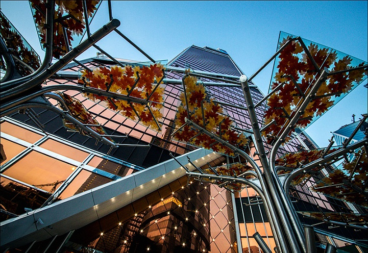

Башня Меркурий
Золотистый небоскреб с самым высоким медиафасадом в Европе

Характеристики
- Высота:339 м
- Годы строительства:2006-2013
- Девелопер:LLC Liedel Investments Limited
- Застройщик:РАСЭН
- Общая площадь:173 960 м²
- Скорость лифтов:7 м/с
- Количество этажей:75 надземных + 5 подземных
- Количество машино-мест:437
- Инфраструктура:3 834 м²
- Апартаменты:22 619 м²
- Участок:14
Золотая жемчужина Сити
Меркурий Сити так филигранно вписан в окружающее пространство, что ни одна из окружающих башен не закрывает обзор. Необычная форма постройки и панорамное остекление медно-золотистого цвета, с использованием тонированных и энергосберегающих стеклопакетов позволяют этой башне выделяться даже на фоне самых необычных строений города.
🪟 Уникальное остекление
46 000 м² — площадь остекления здания. Это больше семи футбольных полей. Стоимость стекла с оксидным напылением — около 4 000 евро за м². Каждый стеклопакет стоит не менее 14 000 евро.
🛡️ Сверхпрочная конструкция
3 см — максимальное колебание башни. Такую устойчивость придает железобетонная конструкция из двух независимых каркасов (у многих небоскребов каркас один). «Меркурию» не страшны землетрясения до 9 баллов по шкале Рихтера (в официальной экспертизе — до 6 баллов).
✨ Самый высокий медиафасад в Европе
2 000 000 светодиодов в медиафасаде, расположенном на 67–68-м этажах (каждый из которых двойной). Это самый высокий в Европе медиафасад. Вечером башня превращается в гигантский светодиодный экран, который виден из многих точек города.
💧 Инженерные инновации
Для подъема воды наверх небоскреба используется каскадная система. Ее работу обеспечивают 3 насосные станции. На каждом техническом уровне есть свой накопитель воды на 75 м³.
Как добраться
📍 Адрес: Пресненская набережная, 14, Москва
🚇 Метро: Выставочная, Международная, Деловой центр